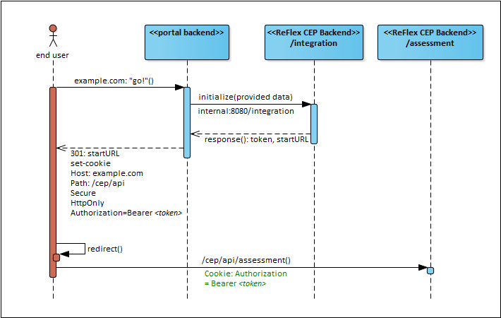

CEP deployment guidelines
Regardless of the chosen front end integration scenario, there might be several ways to deploy a CEP installation into a production environment. The deployment guidelines for the CEP may differ from other ReFlex components. Compared to other ReFlex components, CEP is a user facing application that is usually accessible in the public web and hence needs special attention when deployed.
Security model
The actual deployment has important implications especially how CEP security works.
As explained in the Security chapter, CEP uses secure HTTP-only session cookies with the following meaning:
- Secure: A cookie is only transferred over HTTPS-connections.
- HTTP-only: A cookie is not accessible from JavaScript and thus cannot be hijacked via XSS.
- Session Cookie: A cookie is only valid for the current browser session and dropped when the user closes the CEP-window.
A browser has strong restrictions how cookies can be set and when they are transferred:
- Cookies can only be set for a host and its sub-domains. However, a sub-domain can set a cookie for its parent domain up to the top-level-domain.
- Requests (e.g. AJAX) to other domains can set cookies for that domain. These cookies are called third-party-cookies. Third-party-cookies are not accepted by every browser by default, hence, we cannot expect them to work for all users.
- Cookies can be scoped to a path. This allows an application to limit a cookie to requests to a certain path.
This requires the hosting portal application to set the Authorization cookie on the exact host-name or a super-domain of the CEP back end host(s).
Back end deployment
The CEP back end is deployed on a servlet container. It consists of a single web application archive that can be deployed on one or more application servers.
Recommended deployment scenario
The most secure and recommended deployment scenario is to host the Portal application and the CEP (front end and backend) on the same hostname under different paths.
It is generally recommended not to run a servlet application server as the user facing backend but hide it behind a reverse proxy that can take the following operational tasks (things application servers are not particularly good at):
- SSL/TLS termination & TLS session cache
- DOS protection
- IP/User quota
- TCP connection attacks
- Load-balancing & sticky sessions
- Caching of static assets
- Monitoring/Logging of throughput and response times
- Setting additional security headers like:
- Content-Security-Policy
- Strict-Transport-Security
- SSL Certificate Pinning
Such a reverse proxy can either be a hardware appliance like F5 or a software solution like Varnish, Apache HTTP or NGINX.
A reverse proxy allows you to configure different application servers under the same hostname but with different paths. These paths can even overlap such that a default application can handle all path requests that are not explicitly handled by another backend.

In the example above, the CEP back end is deployed behind an NGINX reverse proxy. It is bound to the host-relative path /cep/api while the portal back end is directly bound to /. The CEP user interface is bundled with the portal front end application and served by the portals Microsoft Internet Information Services (IIS) server.
Please note that the Integration Endpoint must never be accessible from the public web! It must only be accessible by the integrating portal backend application!
Authorization cookie handover
The initialization of the CEP depends on the Integration scenario, but in general, the Integration Endpoint returns an IntegrationInfo object that contains the JWT bearer token for the initialized application form.
This token has to be handed over to the user agent such that each following request from that user agent (in its current session) against the CEP back end contains a cookie with the name Authorization and the value of the token from the IntegrationInfo object (prefixed with Bearer%20).
This can be achieved by the portal back end by responding to an initialization request with a redirect and a proper Set-Cookie header.

As stated before, to adhere to security considerations, a Set-Cookie header should contain the attributes HttpOnly (not readable from JavaScript) and Secure (only transmitted over HTTPS). The domain should be as specific as possible and the path should match the prefix where the CEP back end is mounted in the reverse proxy.
The configuration from the picture above would result in the following optimal Set-Cookie header:
Set-Cookie: Authorization=Bearer%20<token>;Domain=example.com;Path=/cep/api;Secure;HttpOnly
This Set-Cookie Header contains no expiry-attribute so the cookie is deleted automatically when the user closes the browsing context (window).